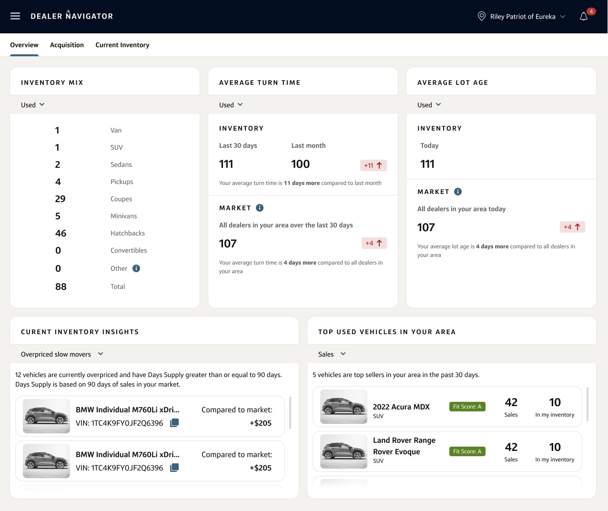
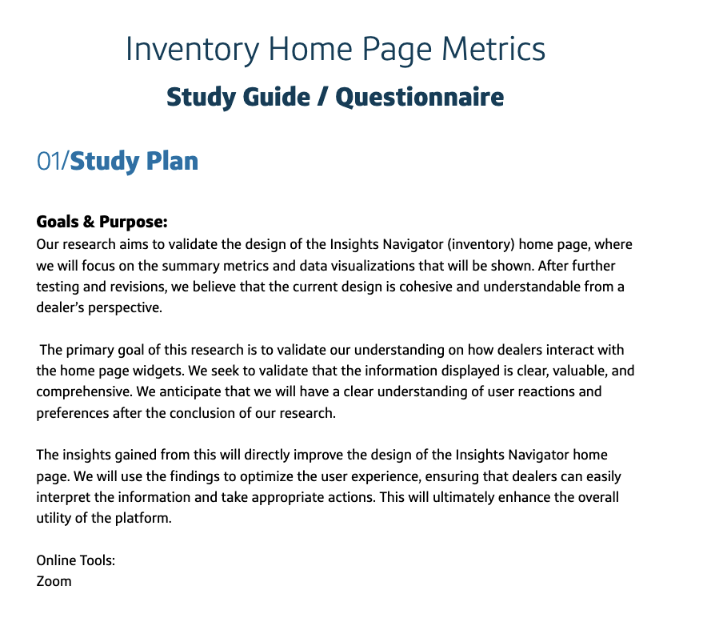
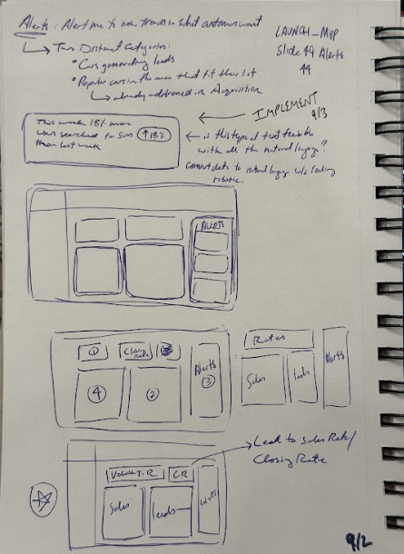
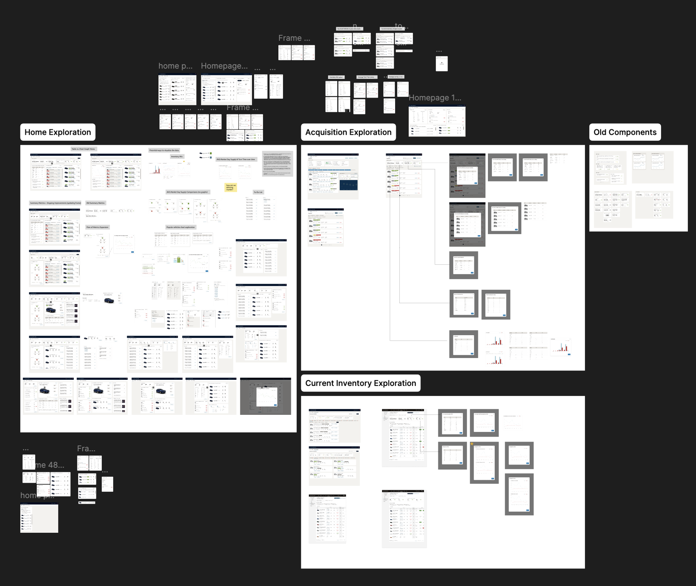
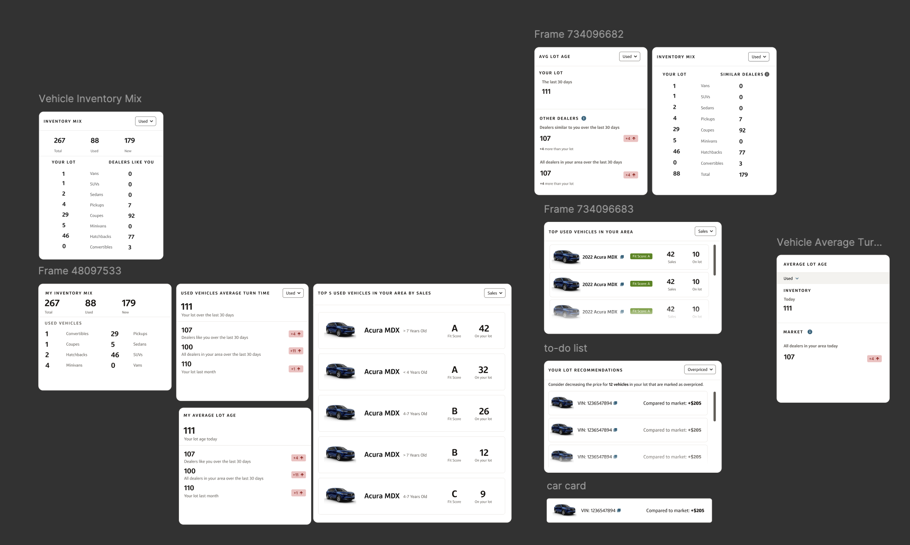
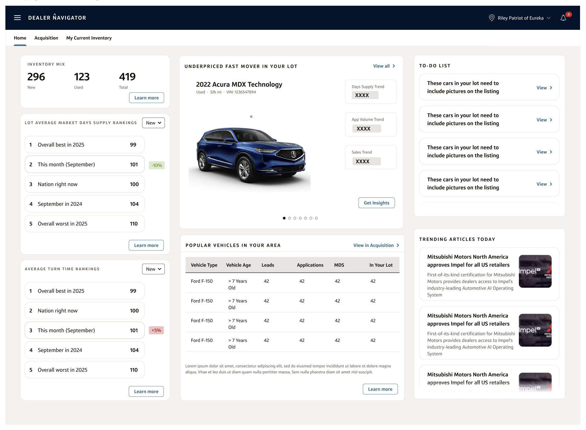
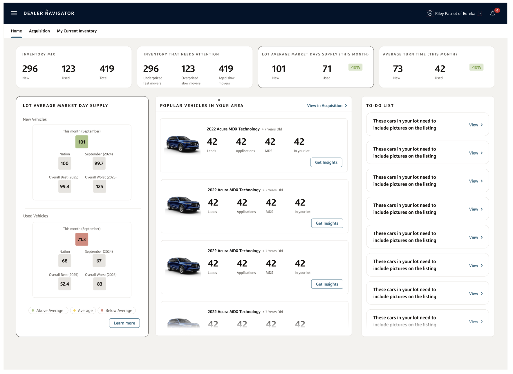
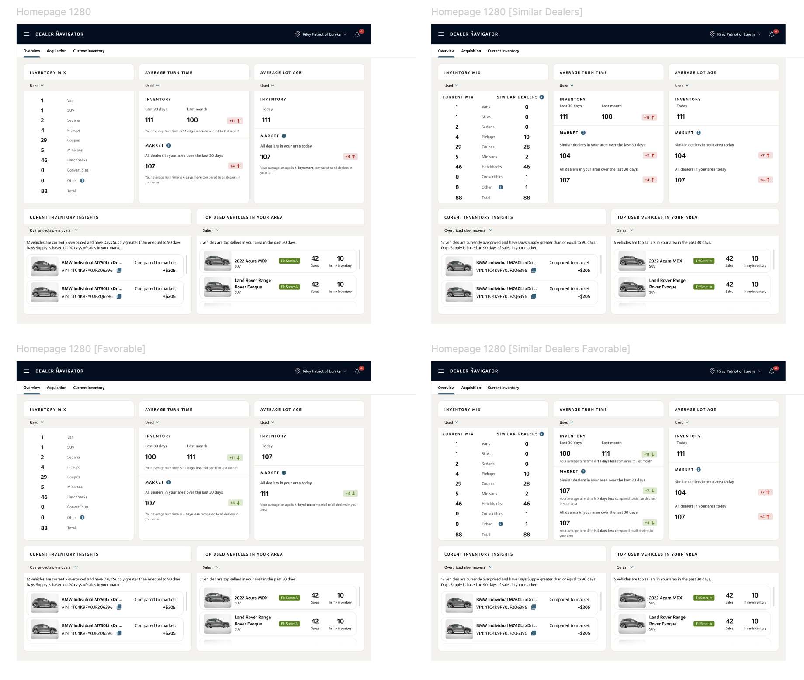
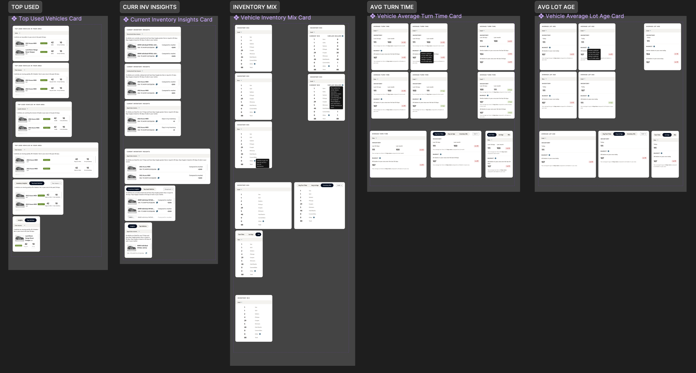

Capital One · Navigator Platform · MAAS / ASaaS
Inventory Homepage
A centralized inventory dashboard that consolidates vehicle acquisition and current stock data into a single, actionable health overview — empowering dealers to make data-driven decisions at a glance.

Overview
The Problem
In the fast-paced automotive industry, inventory is a depreciating asset — every day a vehicle sits on the lot, it loses value and erodes profit margins. Dealership owners often lack the time to dig through complex spreadsheets or juggle disconnected tools, leading to decisions driven by gut feeling rather than data. To maintain a competitive edge, dealers require immediate, high-level visibility to distinguish between stagnant stock and high-demand opportunities.
Our Solution
I designed a centralized inventory dashboard within Navigator Platform that consolidates acquisition and current stock data into a single source of truth. We addressed these operational silos by focusing on three key pillars:
A "quick glimpse" view that surfaces critical health metrics in seconds — no dense data, no digging.
Unifying the vehicle lifecycle so dealers never overbuy or miss out on high-fit inventory.
Surfacing specific vehicles tailored to the dealership's unique lot needs — replacing guesswork with actionable intelligence.
By prioritizing scannability and high-level health metrics, this homepage serves as a strategic command center. It empowers dealers to pivot their strategy instantly, ensuring their lot remains stocked with the right vehicles at the right time while protecting their bottom line.
Research
Internal Stakeholder Synthesis
Before engaging directly with dealerships, I conducted a deep-dive discovery phase with my Product, Analytics, and Engineering partners to synthesize their collective domain expertise. As a new associate, this internal alignment was vital for mapping complex dealership workflows and understanding the technical constraints of our inventory data.
To build a foundational knowledge base, I focused on three key areas:
- Facilitated knowledge-transfer sessions to define industry-specific terminology and understand the nuances of dealer operations.
- Audited legacy documentation and previous research findings to identify existing pain points and avoid redundant discovery.
- Collaborated with peer designers to review existing patterns, ensuring consistency with Capital One's established design standards and content strategy.
This internal groundwork allowed me to enter external user interviews with a sophisticated understanding of the product landscape, enabling me to ask more targeted, high-impact questions.
In-Field Dealership Discovery
With a foundational understanding of dealership workflows and a set of initial low-fidelity concepts, I moved into the primary research phase. I facilitated a series of discovery interviews with dealerships, driven by two core hypotheses:

| Research Objective | Hypothesis |
|---|---|
| Identify if dealers find the homepage valuable and if it presents actionable steps from the given metrics. | Dealers who perceive high value in other dashboards (e.g., vAuto) and take action from them are more likely to engage with the metrics we present. |
| Understand if the metric data being displayed is useful, enhancing the dealer's experience rather than becoming just another tool. | Displaying useful metric data enhances the dealer experience in Inventory, preventing the feature from being perceived as useless. |
Performing primary research and dealer validation was critical for validating internal assumptions, conducting contextual inquiry by observing how dealers interact with current inventory tools, and refining the value proposition of our "quick glimpse" dashboard approach.
Findings & Pain Points
Based on our interviews, I performed a synthesis and found the following key takeaways:
- Current tools update only every few minutes or hours — far too slow for fast-moving inventory decisions.
- Dealers need instant price changes and live inventory status refreshes.
- General managers check pricing and inventory at the start of each day and need immediate snapshots.
- General managers constantly monitor competitors to adjust pricing strategy — a centralized view would be a major win.
- Dealers want to see how their dealership compares to others within their local market (MSA / 75-mile radius).
- Key comparison data: similar dealerships' inventory mix, average turn times, and age of lot.
- Pricing goal is to be slightly underpriced vs. the market, with clear recommendations (e.g., "Price should be at XYZ to sell").
- Jumping between different tools and websites to gather information is a constant headache.
- A dream dashboard would consolidate all tools into one place — recon details, pricing checks, car info, and more.
Ideation
Sketching
The dealer visits gave me much richer signal to translate into more accurate designs. With our design system as a foundation, I brought lo-fi sketches to partner and leadership meetings to align on direction before investing in high-fidelity work.



Many different component concepts were explored during these sessions. After alignment with partners and leadership, I designed the first-pass initial designs for validation testing.
Design Validation Interview
I brought my initial designs into a validation interview with a dealership and received strong positive feedback — the dealer found the layouts easy to navigate and felt aligned with the direction.
"I like that I can view my inventory mix over here pretty easily."— Dealership Participant
"It's good that it defaults to Used vehicles since I look at those often."— Dealership Participant
"This looks good but it doesn't look the same as my other dashboards."— Dealership Participant
Feedback from partners and the dealership both flagged layout as an area to revisit, prompting another round of iteration before finalizing.
Layout Exploration
I pushed the designs further by exploring a wide range of layout configurations — clickable widgets that open modals, dropdowns, and views that switch entire widget states. The goal was to find the configuration that best balanced scannability with depth.


The Final Design
After many rounds of layout changes, we converged on a finalized design. The decision came down to three reasons:
- Other experiences within Navigator Platform use a similar design language, creating a cohesive product feel.
- This design fits better alongside the other tools dealers are already using in their day-to-day workflows.
- Metrics surface at the top for a quick health overview; actionable insights live at the bottom for deeper drill-down when needed.

Five Widget Dashboard
Responsive Component Design

Reflection
First Big Corporate Project
Overall, this was an incredibly fun and eye-opening experience. As my first project — just three weeks into my first corporate role — I was extremely grateful to my team for entrusting me with this responsibility. My manager, fellow designers, product manager, and tech team were all there to help me through it. The lessons I learned here continue to shape my approach to design today.
Limitations & Opportunities
- Given the timeline, the research phase was leaner than ideal. With more time and dealership access, I would have wanted to go deeper into user behavior and edge cases.
- Our inventory product had roughly 17 subscribers at the time — most of whom weren't actively using it due to how early-stage it was. This made it difficult to quantify impact or collect meaningful behavioral feedback for iteration.
These limitations are things I would actively address if revisiting this project with more resources. The work set a strong foundation, and I'm proud of what was built under real-world constraints.